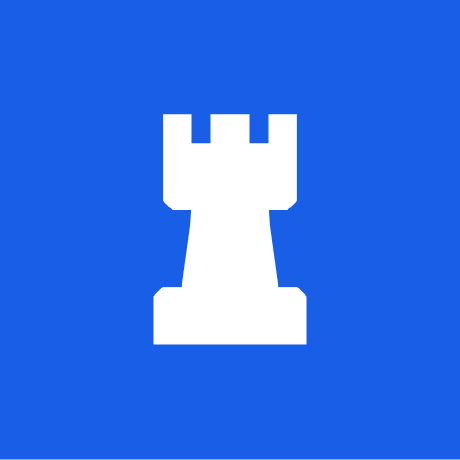

TurretCSS
Что такое TurretCSS?
TurretCSS — это простой, легкий и модульный CSS-фреймворк, созданный для упрощения процесса разработки адаптивных и удобных пользовательских интерфейсов. Он предлагает разработчикам множество готовых стилей и компонентов, которые можно легко интегрировать в проекты.
Основные характеристики TurretCSS
- Модульность:
- Адаптивная сетка:
- Готовые компоненты:
- Простота использования:
- Кроссбраузерная совместимость:
TurretCSS построен на принципе модульности, что позволяет использовать только те компоненты, которые вам нужны. Это способствует уменьшению размера файлов и улучшению производительности.
Фреймворк включает адаптивную сеточную систему, которая обеспечивает плавное отображение на различных устройствах, от мобильных телефонов до настольных ПК.
TurretCSS предлагает ряд готовых компонентов, включая кнопки, карточки, формы, навигацию и многое другое, что ускоряет процесс разработки и улучшает качество интерфейса.
Фреймворк имеет простой и понятный синтаксис, что делает его доступным как для опытных разработчиков, так и для новичков.
TurretCSS обеспечивает стабильную работу в большинстве современных браузеров, что позволяет создавать кроссбраузерные приложения без лишних усилий.
Почему выбрать TurretCSS?
Если вы ищете легкий и модульный CSS-фреймворк, TurretCSS — отличный выбор. Он позволяет быстро и эффективно создавать адаптивные интерфейсы с минимальными усилиями. Его простота и гибкость делают его идеальным инструментом для любого проекта.
Для получения дополнительной информации и доступа к документации, пожалуйста, посетите официальный сайт TurretCSS.